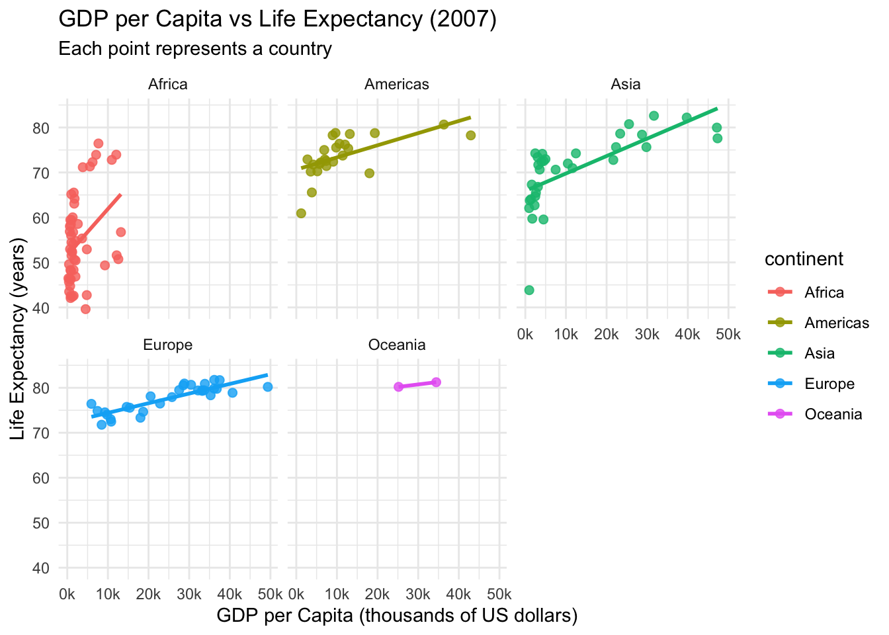

Understanding the Relationship Between GDP Per-Capita and Life Expectancy
This project investigates whether the positive correlation between GDP per capita and life expectancy holds true across different continents. Historically, countries with populations that enjoy higher life expectancy tend to maintain higher GDP per capita. However, this relationship may not be universal. Some nations achieve relatively high life expectancy despite having lower-than-average GDP per capita, while others have comparatively poor life expectancy despite higher average incomes.
This project uses data from the Gapminder dataset. I perform a permutation test to evaluate whether the observed correlation between life expectancy and GDP per capita is stronger than what would be expected by chance within each continent.
The question I hope to answer is: Does higher life expectancy always imply higher GDP per capita?
The Null Hypothesis would be: Any relationship between life expectancy and GDP per capita is due to chance, that is, life expectancy does not predict income. - Knowing a countires life expectancy does not help in the prediction of its GDP per capita
The Alternative Hypothesis would be: Countries with higher life expectancy tend to have systematically higher (or lower) GDP per capita. In other words, the relationship is real, not random. - Countries with deviations in life expetency, whether possitive or negative tend to have systematically differnt GDP levels. The slope is meaningfully different from zero
This study will use the slope of this comparison as the test statistic. The slope in this case measures the direction of association, meaning if the slope is positive, that should indicate higher life expectancy and higher GDP. The steeper the slope, the stronger the link. Under the null hypothesis, when life expectancy values are shuffled randomly among countries, the slope should average around zero. If the observed slope is far from this null distribution, the relationship is unlikely due to chance.
Refrence: The data used in this analysis comes from the Gapminder Foundation, which is a independent education non-profit that aggreigates large data sets drawing from the UN, World Bank and other large international institutions.
Original Author: Rosling, Hans; Rosling, Ola; Rosling Rönnlund, Anna (2005–present) “Gapminder Data”. Stockholm: Gapminder Foundation.
ggplot(gap2007, aes(x = lifeExp, y = gdpPercap, color = continent)) +geom_point(size =2, alpha =0.8) +labs(title ="Life Expectancy vs GDP per Capita (2007)",subtitle ="Each point represents a country",x ="Life Expectancy (years)",y ="GDP per Capita (US dollars)" ) +theme_minimal()

Code
ggplot(gap2007, aes(x = lifeExp, y = gdpPercap, color = continent)) +geom_point(size =2, alpha =0.8) +geom_smooth(method ="lm", se =FALSE) +labs(title ="Life Expectancy vs GDP per Capita (2007)",subtitle ="Each point represents a country",x ="Life Expectancy (years)",y ="GDP per Capita (US dollars)" ) +facet_wrap(~continent) +theme_minimal()
The scatter plot shows the observed relationship between life expectancy and GDP per capita across countries in 2007. Their is a general upward trend where countries with longer life expectancy tend to have higher incomes. Additionally, their is noticeable variation within continents. Some countries achieve high life expectancy despite modest GDP per capita, and others show the opposite.This graph warrants testing whether the relationship is strong enough to be considered statistically meaningful.
This faceted graph shows the relationship between life expectancy and GDP per capita in 2007, separated by continent. Each point represents a country, and the line within each panel indicates the general direction of the relationship. Overall, continents like Europe and Asia show a strong positive correlation, while Africa and Oceania display weaker associations between life expectancy and GDP per capita.
Code
#Identifying the LifeExp slope with a linear modelget_slope <-function(df) { fit <-lm(gdpPercap ~ lifeExp, data = df)coef(fit)[["lifeExp"]] }
The code above tests the slope of the simple regression. gdpPercap ~ lifeExp
Asia Europe Africa Americas Oceania
1225.2852 3365.9658 144.5327 1292.5570 8972.2195
The above code uses a for loop to compute the observed slope for each continent. For each iteration, the code filtered the data set to a single continent, ran the get_slope() function and saved the slope value. This allows me to compare how the strength of the relationship between life expectancy and GDP per capita differs geographically.Given the slope output, we can predict the average change in GDP per capita (US$) for a 1 year increase in life. For example in Asia, we can predict 1 additional year of life yields 1225.2 additional gdp per capita.
Larger positive slopes signify a steeper income to health relationship.
# A tibble: 6 × 4
continent obs_slope perm_slope rep
<fct> <dbl> <dbl> <int>
1 Africa 145. -18.0 1
2 Americas 1293. -205. 1
3 Asia 1225. -155. 1
4 Europe 3366. -514. 1
5 Oceania 8972. -8972. 1
6 Africa 145. 22.6 2
To simulate the null hypothesis that life expectancy and GDP per capita are unrelated, I created a permutation function. The function (perm_null) randomly shuffles life expectancy values within the dataset. For each randomization, a linear model is fit for each continent and the new slope is recorded. Repeating this 2,000 times using the map() function creates a null distribution of slopes that would occur purely by chance.
# A tibble: 5 × 2
continent p_value
<fct> <dbl>
1 Africa 0.004
2 Americas 0
3 Asia 0
4 Europe 0
5 Oceania 0.482
The permutation results show that the relationship between life expectancy and GDP per capita is statistically significant in Africa, Asia, the Americas, and Europe. The effect in Africa is far smaller which may indicate that economic development does not translate into health outcomes as consistently there as it does in other parts of the world. Oceania shows a non-significant results because only two countries are present, making any estimate unstable. Overall, the analysis suggests that while income and health are positively related worldwide, the strength of this relationship varies by region.
Code
#Plotting -- Faceted null distribution plots obs_slopes <- gap2007 |>group_by(continent) |>summarize(obs_slope =coef(lm(gdpPercap ~ lifeExp))[2], .groups ="drop")ggplot() +geom_histogram(data = null_by_cont_tbl,aes(x = perm_slope),bins =40, fill ="lightblue", color ="white" ) +geom_vline(data = obs_slopes,aes(xintercept = obs_slope),color ="red", linewidth = .8 ) +facet_wrap(~ continent, scales ="free") +labs(title ="Permutation Test: Null Distribution of Slopes by Continent",subtitle ="Red line = observed slope; histogram = null slopes (lifeExp shuffled)",x ="Permuted slopes", y ="Count" ) +theme_minimal()
The histograms show slopes expected by chance if life expectancy and GDP were unrelated, while the red lines show the true slopes. In Asia, Europe, and the Americas, the observed slopes fall far outside the null distributions, indicating a strong real relationship. Africa shows a weaker but still significant effect. Oceania does not show significance because it includes only two countries, making its estimate unreliable.
Conclusion:
This simulation study provides strong evidence of a positive relationship between life expectancy and GDP per capita worldwide. However, this strength of correlation is dependent on region. Europe, Asia and the Americas show a strong and significant relationship. Africa shows a weaker, yet still significant connection. Oceania’s results are not meaningfull due to having only two countries in the dataset. Overall, economic development and improved health outcomes appear linked globally, but the degree of the link is highly dependent on regional context.